지적산업기사 (2011-06-12 기출문제)
1과목: 지적측량
1. 지적도근점의 종선차의 부호가 (+)이고 횡선차의 부호가 (-)인 측선은 어느 상한에 위치하는가?
- 제1상한
- 제2상한
- 제3상한
- 제4상한
(정답률: 77%)

2. 다음 중 방위각법에 따른 지적도근점측량에서 각의 관측 및 계산 단위 기준으로 옳은 것은?
- 그레이드
- 라디안
- 초
- 분
(정답률: 44%)
3. 지적삼각보조점측량에서 방향 A-B의 △x=-119.76m, △y=-209.10m, 방향 B-C의 △x=-156.60m, △y=-64.50m일 때 A-C방향의 △x와 △y는 얼마인가?
- △x=-36.84m, △y=-144.60m
- △x=-276.36m, △y=-273.60m
- △x=+36.84m. △y=+144.60m
- △x=+276.36m, △y=+273.60m
(정답률: 34%)
4. 평판측량방법에 따라 측정한 경사거리가 23.6m이고, 조준의의 경사분획이 20 이었다면 수평거리는 얼마인가?
- 23.0m
- 23.1m
- 23.3m
- 23.5m
(정답률: 62%)
5. 다음 중 평판측량방법에 있어서 도상에 영향을 미치지 아니하는 지상거리의 축척별 허용범위 기준으로 옳은 것은? (단, M : 축척분모)
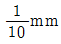
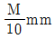
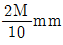
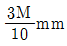
(정답률: 77%)
6. 다각망도선법에 따른 지적도근점의 각도관측을 배각법에 따르는 경우, 1등도선의 폐색오차는 얼마 이내로 하여야 하는가? (단, 폐색변을 포함한 변의 수는 12 이다.)
- ±65초
- ±67초
- ±69초
- ±73초
(정답률: 80%)
7. 우리나라 토지 조사 당시 대삼각 측량에서 대삼각점의 평균 점간 거리는 얼마로 하였는가?
- 30km
- 20km
- 15km
- 10km
(정답률: 47%)
8. 다음 중 경위의측량방법에 따른 세부측량에서 측량결과도의 작성 기준으로 옳은 것은?
- 축척변경 시행지역의 측량결과도는 1/1000로 작성한다.
- 농지의 구획정리 시행지역의 측량결과도는 1/500로 작성한다.
- 축척변경 시행지역의 측량결과도는 필요한 경우 미리 시·도지사의 승인을 얻어 1/1000까지 작성할 수 있다.
- 측량결과도는 그 토지의 지적도와 동일한 축척으로 작성하여야 한다.
(정답률: 46%)
9. 다음 그림에서 측선
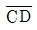
의 방위가 옳은 것은?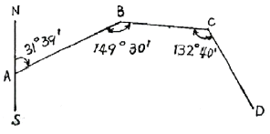
- E 70˚ 19´ S
- S 70˚ 31´ E
- N 30˚ 19´ W
- W 70˚ 41´ N
(정답률: 64%)
10. 다음 중 지상경계를 새로 결정하려는 경우의 기준이 옳지 않은 것은?
- 연접되는 토지 간에 높낮이 차이가 없는 경우 그 구조물 등의 중앙
- 연접되는 토지 간에 높낮이 차이가 있는 경우 그 구조물 등의 상단부
- 토지가 해면 또는 수면에 접하는 경우 최대만조위 또는 최대만수위가 되는 선
- 공유수면매립지의 토지 중 제방 등을 토지에 편입하여 등록하는 경우 바깥쪽 어깨부분
(정답률: 67%)
11. 다음 중 광파기측량방법과 다각망도선법에 따른 지적삼각 보조점측량의 기준에 대한 설명으로 옳지 않은 것은? (단, n은 폐색변을 포함한 변의 수를 말한다.)
- 3개 이상의 기지점을 포함한 결합다각방식에 따른다.
- 1도선의 거리를 4km 이하로 한다.
- 1도선의 점의 수는 기지점과 교점을 포함하여 5개 이하로 한다.
- 도선별 평균방위각과 관측방위각의 폐색오차는 ±20√n초 이내로 한다.
(정답률: 49%)
12. 다음 중 경위의측량방법과 교회법에 따른 지적삼각보조점의 관측 및 계산에서 2개의 삼각형으로부터 계산한 연결교차가 최대 얼마 이하일 때에 그 평균치를 지적삼각보조점의 위치로 하는가?
- 0.10m
- 0.20m
- 0.30m
- 0.40m
(정답률: 70%)
13. 다음 중 지적측량성과와 검사성과의 연결교차의 허용범위 기준이 옳은 것은?
- 지적도근점(경계점좌표등록부 시행지역) : 0.20m이내
- 경계점(경계점좌표등록부 시행지역) : 0.10m 이내
- 경계점(경계점좌표등록부 시행지역 제외) : 기준없음
- 지적도근점(경계점좌표등록부 시행지역 제외) : 0.20m 이내
(정답률: 68%)
14. 다음 중 경계의 제도 기준에 대한 설명으로 옳지 않은 것은?
- 경계는 0.2mm 폭으로 제도한다.
- 1필지의 경계가 도곽선에 걸쳐 등록되어 있는 경우, 도곽선을 기준으로 다른 도면에 나머지 경계를 제도할 수 있다.
- 경계점좌표등록부시행지의 도면(경계점간 거리등록을 하지 아니한 도면은 제외)에 등록하는 경계점간 거리는 검은색으로 1.5mm 크기의 아라비아 숫자로 제도한다.
- 지적측량기준점 등이 매설된 토지를 분할하는 경우 그 토지가 작아서 제도하기가 곤란한 경우에는 그 도면의 여백에 그 축척의 10배로 확대하여 제도할 수 있다.
(정답률: 38%)
15. 다음 중 전자면적측정기에 따른 면적측정 기준으로 옳지 않은 것은?
- 도상에서 2회 측정한다.
- 측정면적은 100분의 1제곱미터까지 계산한다.
- 측정면적은 10분의 1제곱미터 단위로 정한다.
- 교차가 허용면적 이하일 때에는 그 평균치를 측정 면적으로 한다.
(정답률: 73%)
16. 다음 그림에서 AP의 방위각 (
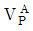
) 이 31˚54´13˝, ∠P(γ)가 58˚34´46˝ 일 때 BP의 방위각 (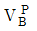
)마인가?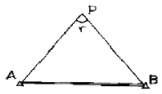
- 333˚ 19´ 27˝
- 153˚ 19´ 27˝
- 211˚ 54´ 13˝
- 320˚ 54´ 13˝
(정답률: 43%)
17. 축척이 1200분의 1인 지적도 1도곽의 포용 면적은 얼마인가?
- 30000m2
- 50000m2
- 200000m2
- 800000m2
(정답률: 56%)
18. 다음 중 지적도근점측량에서 지적도근점을 구성하는 도선형태 기준에 해당하지 않는 것은?
- 결합도선
- 왕복도선
- 개방도선
- 폐합도선
(정답률: 74%)
19. 다음 중 지적삼각보조점 성과를 관리하여야 하는 자는?
- 지적소관청
- 시·도지사
- 국토해양부장관
- 행정안전부장관
(정답률: 77%)
20. 지적도에 직경 3mm의 원을 제도하고 그 원 안에 십자선 (+)을 표시하는 지적기준점은?
- 지적측량도근점
- 지적삼각보조점
- 지적삼각점
- 1등 삼각점
(정답률: 76%)
2과목: 응용측량
21. 교각(I)과 반지름(R)을 알고 있는 원곡선의 외선장 (E)을 구하는 공식은?
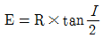
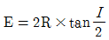
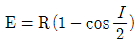
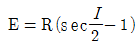
(정답률: 58%)
22. 우리나라의 1/25,000 지형도에서 계곡선의 간격은?
- 10m
- 20m
- 50m
- 100m
(정답률: 56%)
23. BM에서 출발하여 No.2까지 레벨 측량한 야장이 다음과 같다. No.2는 BM보다 얼마나 높은가?
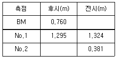
- -1.462m
- +1.462m
- +0.35m
- -0.35m
(정답률: 55%)
24. 반지름(R) = 130m인 원곡선을 편각법으로 설치하려 할 때 중심말뚝 간격 = 20m에 대한 편각(δ)은?
- 4° 24' 26"
- 5° 18' 26"
- 8° 48' 26"
- 9° 36' 26"
(정답률: 56%)
25. 그림과 같은 등고선도에서 경사가 가장 심한 곳은? (단, A점은 산 정상이다.)
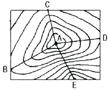
- AB
- AC
- AD
- AE
(정답률: 77%)
26. 터널측량에서 지상의 측량좌표와 지하측량좌표를 같게 하는 측량은?
- 지상(갱외)측량
- 지하(갱내)측량
- 터널 내외 연결측량
- 지하 관통측량
(정답률: 70%)
27. 태양 관선이 서북쪽에서 비친다고 가정하고, 지표의 기복에 대해 명암으로 입체감을 주는 지형 표시 방법은?
- 응명법
- 단채법
- 점고법
- 등고선법
(정답률: 62%)
28. 표정의 과정 중 축척의 결정, 수준면의 결정, 위치의 결정을 수행하는 작업은?
- 내부표정
- 상호표정
- 절대표정
- 접합표정
(정답률: 48%)
29. 초점거리 150mm의 카메라를 이용하여 기준면으로부터 5,000m 높이에서 수직촬영을 하였다. 비고 500m 지점의 사진축적은?
- 1/20,000
- 1/30,000
- 1/40,000
- 1/50,000
(정답률: 49%)
30. 터널 완성 후 단면관측에 대한 설명 중 틀린 것은?
- 단면검사 및 변형검사를 위해 실시하는 측량이다.
- 터널이 곡선인 경우는 접선에 직각방향으로 단면을 관측한다.
- 터널이 경사진 경우는 수평방향의 수직단면을 관측해야 한다.
- 단면측량은 단면측정기를 사용하여 관측하는 방법이 사용된다.
(정답률: 37%)
31. 레벨(level)의 중심에서 50m 떨어진 지점에 표척을 세우고 기포가 중앙에 있을 때 1.248m, 기포가 2눈금 움직였을 때 1.223m를 각각 읽은 경우 이 레벨의 기포관 곡률반지름은? (단, 기포관 1눈금 간격은 2mm이다.)
- 8m
- 12m
- 16m
- 20m
(정답률: 44%)
32. 도로에 사용하는 클로소이드(clothoid) 곡선에 대한 설명으로 틀린 것은?
- 완화곡선의 일종이다.
- 일종의 유선형 곡선으로 종단곡선에 주로 사용된다.
- 곡선길이에 반비례하여 곡률반지름이 감소하는 곡선이다.
- 차가 일정한 속도로 달리고 그 앞바퀴의 회전속도를 일정하게 유지할 경우의 운동궤적과 같다.
(정답률: 33%)
33. 다음 중 항공사진측량에서 광축이 연직선과 일치하도록 촬영된 사진은?
- 경사사진
- 수평사진
- 수직사진
- 저각도사진
(정답률: 42%)
34. 곡선반경 500m 되는 원곡선 상을 60km/h로 주행하려면 편경사는? (단, 궤간은 1,067mm 이다.)
- 6.⑤mm
- 7.84mm
- 60.5mm
- 78.4mm
(정답률: 40%)
35. 사진측량의 장점에 대한 설명으로 옳지 않은 것은?
- 정량적, 정성적 해석이 가능하며 접근하기 어려운 대상물도 측정 가능하다.
- 측량의 정확도가 균일하다.
- 축척변경이 용이하며 4차원 측량도 가능하다.
- 촬영 대상물에 대한 판독 및 식별이 항상 용이하다.
(정답률: 62%)
36. 항공사진의 특수 3점에 해당하지 않는 것은?
- 부점
- 연직점
- 등각점
- 주점
(정답률: 75%)
37. 위성측량에서 GPS의 의사거리(Pseudo range)에 대한 설명으로 옳은 것은?
- 시간 오차 등 각종 오차를 포함하고 있는 거리이다.
- 모든 오차가 제거된 최종 확정된 거리이다.
- 수신기와 가상 기준국 간에 실제 거리이다.
- 측정된 위성과 수신기 간의 거리에서 시간 오차가 보정된 거리이다.
(정답률: 33%)
38. GPS 측량의 특성에 대한 설명으로 옳지 않은 것은?
- 측점간 시통이 요구된다.
- 야간관측이 가능하다.
- 날씨에 영향을 거의 받지 않는다.
- 전리층 영향에 대한 보정이 필요하다.
(정답률: 65%)
39. 초점거리 150m, 경사각이 30° 일 때 주점과 등각점 사이의 거리는?
- 0.02m
- 0.04m
- 0.06m
- 0.08m
(정답률: 60%)
40. 수준측량의 용어 설명 중 틀린 것은?
- 이기점 - 전시와 후시를 모두 관측하여 앞뒤 수준측량 결과를 연결시키는 점이다.
- 중간점 - 후시만 취하는 점으로 표고를 알고 있는 점이다.
- 지평선 - 연직선에 직교하는 직선이다.
- 기준면 - 높이의 기준이 되는 면으로 평균해수면을 말한다.
(정답률: 56%)
3과목: 토지정보체계론
41. 다음 중 래스터 구조를 이루는 기본요소로 옳은 곳은?
- 체인
- 화소
- 영역
- 노드
(정답률: 50%)
42. 다음 중 지적전산자료의 유지관리 업무를 원활히 수행하기 위하여 지정하는 지적전산자료관리책임관은?
- 사용기관의 전산업무담당과장
- 사용기관의 전산업무담당국장
- 사용기관의 지적업무담당과장
- 사용기관의 지적업무담당국장
(정답률: 53%)
43. 데이터의 이력서라 불리며, 수록된 데이터의 내용·품질·조건 및 특징을 저장한 것을 무엇이라 하는가?
- 그리드데이터
- 표준데이터
- 영상데이터
- 메타데이터
(정답률: 77%)
44. 다음 중 한국토지정보체계(KLIS)에 대한 설명으로 옳은 것은?
- 우리나라에서 가장 일찍 출현한 토지정보체계이다.
- 2계층 클라이언트/서버 아키텍처 구조로 되어 있다.
- 대한지적공사에서 독자적으로 개발하였다.
- 필지중심토지정보체계(PBLIS)와 토지종합정보망(LMIS)을 통합한 시스템이다.
(정답률: 75%)
45. 다음 중 래스터데이터가 갖는 장점으로 옳지 않은 것은?
- 데이터 구조가 단순하다.
- 중첩분석이 용이하다.
- 원격탐사 영상 자료와의 연계가 용이하다.
- 위상관계를 나타낼 수 있다.
(정답률: 64%)
46. 다음 중 디지타이징에 비해 스캐너에 의한 도형정보의 입력 방식이 갖는 특징으로 옳지 않은 것은?
- 지도상의 정보를 신속하게 입력할 수 있다.
- 깨끗하고 단순한 형태의 도면 입력에 적합하다.
- 정보의 종류별로 레이어를 구분하여 입력하기 어렵다.
- 해상도가 높으면 자료가 정밀하고 용량이 줄어든다.
(정답률: 62%)
47. 다음 중 벡터구조의 요소인 선(line)에 대한 설명으로 옳지 않은 것은?
- 지도상에 표현되는 1차원적 요소다.
- 길이와 방향으로 가지고 있다.
- 일반적으로 면적을 가지고 있다.
- 노드에서 시작하여 노드에서 끝난다.
(정답률: 73%)
48. 다음 중 토지소유권에 대한 정보를 검색하고자 하는 경우 식별자로 사용하기에 가장 적절한 것은?
- 주소
- 성명
- 주민등록번호
- 생년월일
(정답률: 68%)
49. 토지정보체계의 구성요소에 해당하지 않는 것은?
- 기준점
- 데이터베이스
- 소프트웨어
- 조직과 인력
(정답률: 71%)
50. 다음 중 점·선·면으로 나타난 도형(객체) 간의 공간상의 상관관계를 의미하는 것은?
- 커버리지 (coverage)
- 위상 (topology)
- 속성 (attribute)
- 레이어 (layer)
(정답률: 68%)
51. 다음 중 다목적지적의 3대 요소만을 옳게 나열한 것은?
- 측지기준망, 기본도, 지적중첩도
- 수치지적도, 지형도, 측지기준망
- 토지대장, 지적도, 필지식별번호
- 지형도, 위성사진, 측지기준망
(정답률: 82%)
52. 다음 중 지적사무 전산처리 규정에 따른 용어의 정의가 옳지 않은 것은?
- "사용기관"이라 함은 지적전산정보처리조직이 설치되어 있는 특별시·광역시 또는 도 및 시·군·구를 말한다.
- "프로그램"이라 함은 지적전산정보처리조직 운영과지적사무를 전산으로 처리하기 위하여 작성된 명령어의 집합을 말한다.
- "지적전산정보처리조직"이라 함은 지적공부에 관한 자료사항을 입력한 전산정보처리조직을 말한다.
- "복사"라 함은 사용하고 있는 자료나 프로그램 등이 파손될 경우에 대비하여 다른 기억매체에 별도로 복사하여 보관하는 것을 말한다.
(정답률: 36%)
53. 다음 중 속성정보에 대한 설명으로 옳지 않은 것은?
- 지도의 특정한 지도요소가 속성정보에 해당한다.
- 지도상의 특성이나 질, 형상·지물의 관계를 나타낸다.
- 도형정보와 연결이 되는 관계로 정확성을 유지하는데 어려움이 많다.
- 속성정보는 도형요소에 의해 나타난 성질을 문자나 숫자로도 설명한다.
(정답률: 28%)
54. 다음 중 래스터데이터의 압축방법에 해당하지 않는 것은?
- 체인코드 (Chain Code) 기법
- 스틸코드 (Steel Code) 기법
- 블록코드 (Block Code) 기법
- 사지수형 (Quadtree)
(정답률: 72%)
55. 다음 중 데이터베이스의 장점으로 옳지 않은 것은?
- 데이터의 처리 속도가 증가한다.
- 방대한 종이 자료를 간소화 시킨다.
- 정확한 최신 정보를 이용할 수 있다.
- 초기의 시스템 구축 비용이 저렴하다.
(정답률: 80%)
56. 다음 중 토지정보체계의 자료를 입력하는 장치가 아닌 것은?
- 플로터
- 마우스
- 디지타이저
- 스캐너
(정답률: 52%)
57. 다음 중 필지중심토지정보시스템(PBLIS)의 구성 내용에 해당하지 않는 것은?
- 지적행정시스템
- 지적공부관리시스템
- 지적측량성과작성시스템
- 지적측량시스템
(정답률: 48%)
58. 다음 중 도면 접합 불일치의 원인으로 옳지 않은 것은?
- 상이한 원점좌표계
- 다양한 도면 축적
- 지적도면의 변형
- 지목 변경 증가
(정답률: 6%)
59. 다음 중 제3차 국가 GIS사업(2006~2010년)의 기본계획 방향(비전)으로 가장 알맞은 것은?
- 국가지리정보유통망 시범사업 추진
- 국토정보화의 기반 마련
- 유비쿼터스 국토 실현을 위한 기반조성
- 토지재조사 사업의 추진
(정답률: 37%)
60. 다음 중 지적전산화의 목적과 가장 거리가 먼 것 은?
- 토지 관련 정책 자료의 다목적 활용
- 지방 행전전산화의 촉진
- 국토기본도의 정확한 작성
- 신속하고 정확한 지적 민원 처리
(정답률: 24%)
4과목: 지적학
61. 다음 중 경계의 특징에 대한 설명으로 옳지 않은 것은?
- 제도(製圖)상의 폭만큼 실제 넓이를 인정한다.
- 필지 사이의 경계는 1개만 존재한다.
- 인접한 토지에 공통으로 작용한다.
- 경계점 간 최단거리를 연결한 것이다.
(정답률: 68%)
62. 오늘날의 등기권리증과 같은 것으로 토지매매 사실에 대해 관청이 증명을 한 공증서로 조선시대에 사용되었던 것은?
- 입안
- 양안
- 문기
- 지계
(정답률: 32%)
63. 다음 중 신라시대에 토지측량을 위한 구장산술에 따른 토지 형태에 해당하지 않는 것은?
- 호전(弧田)
- 구고전(句股田)
- 구전(球田)
- 규전(圭田)
(정답률: 40%)
64. 다음 중 토지의 사정(査定)에 대한 설명으로 가장 옳은 것은?
- 소유자와 강계를 확정하는 행정처분이 있었다.
- 소유자가 강계를 결정하는 사법처분이었다.
- 소유권에 불복하여 신청하는 소송 행위이었다.
- 경계와 면적을 결정하는 지적조사 행위이었다.
(정답률: 82%)
65. 다음 중 처음으로 지적에 관한 독립적인 체계를 갖추어 지적법이 제정된 시기로 옳은 것은?
- 1912년
- 1918년
- 1950년
- 1975년
(정답률: 22%)
66. 다음 중 적극적 등록제도에 대한 설명으로 옳지 않은 것은?
- 토지 등록을 의무로 하지 않는다.
- 지적공부에 등록되지 않은 토지에는 어떠한 권리도 인정되지 않는다.
- 적극적 등록제도의 발달된 형태로 토렌스시스템이 있다.
- 선의의 제3자에 대하여 토지 등록상의 피해는 법적으로 보장된다.
(정답률: 80%)
67. 다음 중 일필지의 경계와 위치를 정확하게 등록하고 등록된 경계에 의하여 경계위치를 정확하게 복원시킴으로써 소유권의 한계를 밝히는 능력을 가지고 있는 지적제도는?
- 법지적
- 세지적
- 유사지적
- 다목적지적
(정답률: 68%)
68. 다음 중 토지조사 및 임야조사사업 당시 지적공부에 등록하였던 토지 면적의 최소 단위로 옳은 것은?
- 평, 홉 (坪, 合)
- 무, 보 (畝, 步)
- 홉, 보 (合, 步)
- 제곱미터 (m2)
(정답률: 27%)
69. 다음 중 양전의 순서에 따라 1필지마다 천자문의 자번호(子番號)를 부여하였던 제도는?
- 수동이척제
- 일자오결제
- 지번지역제
- 동적이척제
(정답률: 78%)
70. 다음 중 등록방법에 따른 지적의 분류에 해당하는 것은?
- 법지적
- 입체지적
- 수치지적
- 적극적 지적
(정답률: 23%)
71. 다음 중 토지조사사업 당시 일반적으로 지번을 붙이지 아니하였던 지목에 해당하는 것은?
- 지소
- 수도용지
- 공원지
- 철도선로
(정답률: 28%)
72. 다음 중 토렌스시스템의 기본 이론에 해당하지 않는 것은?
- 거울이론
- 보상이론
- 커튼이론
- 보험이론
(정답률: 76%)
73. 다음 중 토지조사사업 당시 불복신립 및 재결을 행하는 토지소유권의 확정에 관한 최고의 심의기관은?
- 도시자
- 임시토지조사국장
- 고등토지소사위원회
- 임야조사위원회
(정답률: 63%)
74. 다음 중 토렌스시스템(Torrens System)이 창안된 국가는?
- 영국
- 프랑스
- 네덜란드
- 오스트레일리아
(정답률: 76%)
75. 다음 중 지적제도에 대한 설명으로 옳지 않은 것은?
- 효율적인 토지 관리와 소유권 보호를 목적으로 한다.
- 토지에 대한 물리적 현황의 등록을 공시한다.
- 행정구역 중심으로 운영되고 있다.
- 토지에 대한 권리관계를 중심으로 지적공부에 등록한다.
(정답률: 40%)
76. 다음 중 지적공부의 등록사항을 국가가 결정하여 등록하는 이유로 가장 옳은 것은?
- 토지의 경제성을 고려하여 등록하기 위하여
- 지역적 특성을 고려하여 등록하기 위하여
- 지적의 공신력 제고를 위하여
- 공정한 손실 보상을 위하여
(정답률: 60%)
77. 다음 중 토지의 지리적 위치의 고정성과 개별성을 확보하고 필지의 개별적 구분을 해 주는 토지표시 사항은?
- 지번
- 지목
- 면적
- 소유자
(정답률: 79%)
78. 다음 중 1720년부터 1723년 사이에 이탈리아 밀라노의 지적도 제작 사업에서 전 영토를 측량하기 위해 사용한 지적도의 축척으로 옳은 것은?
- 1/200
- 1/2000
- 1/2400
- 1/3000
(정답률: 62%)
79. 다음 중 우리나라 지적의 3요소만으로 옳게 나열한 것은?
- 지적공무원, 지적측량사, 등기공무원
- 등기소, 소관청, 대한지적공사
- 토지, 등록, 공부
- 권리, 지적도, 토지대장
(정답률: 79%)
80. 다음 지목의 유형 중 지표면의 형태, 토지의 고저수륙의 분포상태 등 땅이 생긴 모양에 따라 지목을 결정하는 것은?
- 토성지목
- 지형지목
- 용도지목
- 토양지목
(정답률: 58%)
5과목: 지적관계
81. 다음 중 축척변경위원회의 심의·의결사항으로 옳은 것은?
- 지번별 제곱미터당 금액의 결전에 관한 사항
- 지적측량 적부심사에 관한 사항
- 지적기술자의 양성방안에 관한 사항
- 지적기술자의 징계에 관한 사항
(정답률: 69%)
82. 다음 중 지적공부에 해당하지 않는 것은?
- 공유지연명부
- 대지권등록부
- 지번색인표
- 경계점좌표등록부
(정답률: 57%)
83. 다음 중 1필지로 정할 수 있는 기준으로 옳지 않은 것은?
- 지번부여지역의 토지로서 소유자와 용도가 같고 지반이 연속된 토지
- 종된 용도의 토지의 지목이 "대" 인 경우
- 주된 용도의 토지의 편의를 위하여 설치된 도로·구거 등의 부지
- 주된 용도의 토지에 접속되거나 주된 용도의 토지로 둘러싸인 토지로서 다른 용도로 사용되고 있는 토지
(정답률: 75%)
84. 다음 중 지적측량수행자의 성실의무에 관한 설명으로 옳지 않은 것은?
- 정당한 사유없이 지적측량 신청을 거부하여서는 아니된다.
- 배우자 이외에 직계 존속·비속이 소유한 토지에 대한 지적측량을 할 수 있다.
- 지적측량수수료 외에는 어떠한 명목으로도 그 업무와 관련한 대가를 받으면 아니된다.
- 지적측량수행자는 신의와 성실로 공정하게 지적측량을 하여야 한다.
(정답률: 79%)
85. 다음 중 토지소유자가 하여야 하는 신청을 대위할수 없는 자는?
- 국가가 취득하는 토지인 경우 해당 토지를 관리하는 행정기관의 장
- 민법 제404조의 규정에 의한 채권자
- 공공사업에 따라 지목이 공장용지로 되는 토지인 경우 해당 토지를 관리하는 지방자치단체의 장
- 주택법에 따른 공동주택의 부지인 경우 집합건물의 소유 및 권리에 관한 법률에 따른 관리인
(정답률: 31%)
86. 다음 중 토지대장에 등록하여야 하는 사항이 아닌 것은?
- 지목
- 면적
- 토지의 고유번호
- 소유권 지분
(정답률: 70%)
87. 다음 중 도시개발법에 따른 도시개발사업과 관련한 토지의 이동이 필요한 경우, 사업의 착수·변경 또는 완료 사실의 신고는 그 사유가 발생한 날부터 최대 몇일 이내에 하여야 하는가?
- 7일 이내
- 14일 이내
- 15일 이내
- 30일 이내
(정답률: 49%)
88. 다음 중 현행 지적도의 축척으로 사용하지 않는 것은?
- 1/500
- 1/1000
- 1/2000
- 1/3000
(정답률: 61%)
89. 다음 중 지적공부에 등록된 토지가 바다로 되어원상으로 회복될 수 없는 경우, 토지소유자가 등록말소 신청을 하여야 하는 기간 기준으로 옳은 것은?
- 측량 검사일부터 60일 이내
- 측량 검사일부터 90일 이내
- 통지를 받은 날부터 90일 이내
- 통지를 받은 날부터 60일 이내
(정답률: 61%)
90. 다음 중 국가가 국가를 위하여 하는 등기로 보는 등기 촉탁 사유에 해당하지 않는 것은?
- 등록사항정정
- 축척변경
- 지번변경
- 신규등록
(정답률: 71%)
91. 다음 중 지적소관청이 지적공부의 등록사항에 잘못이 있는 지를 직권으로 조사·측량하여 정정할 수 있는 경우가 아닌 것은?
- 지적공부의 등록사항이 잘못 입력된 경우
- 지적공부의 작성 또는 재작성 당시 잘못 정리된 경우
- 임야도에 등록된 필지의 면적이 증가하고 경계의 위치가 잘못된 경우
- 토지이동정리결의서의 내용과 다르게 정리된 경우
(정답률: 58%)
92. 다음 중 지목이 임야에 해당하지 않는 것은?
- 수림지
- 죽림지
- 간석지
- 모래땅
(정답률: 54%)
93. 다음 중 지적소관청이 토지소유자에게 청산금의 납부고지 또는 수령통지를 하여야 하는 기준으로 옳은 것은?
- 30일 이내
- 20일 이내
- 15일 이내
- 14일 이내
(정답률: 32%)
94. 다음 중 지목을 부호로 표기할 때 첫 글자를 부호로 사용하지 않는 것은?
- 과수원
- 공장용지
- 종교용지
- 수도용지
(정답률: 71%)
95. 다음 중 지목변경 없이 등록전환을 신청할 수 있는 경우에 해당하지 않는 것은?
- 대부분의 토지가 등록전환되어 나머지 토지를 임야도에 계속 존치하는 것이 불합리한 경우
- 임야도에 등록된 토지가 사실상 형질변경 되었으나 지목변경을 할 수 없는 경우
- 도시관리계획선에 따라 토지를 분할하는 경우
- 축척변경이 요구되는 경우
(정답률: 47%)
96. 다음 중 토지의 이동에 해당하지 않는 것은?
- 경계말소
- 지목변경
- 소요권이전
- 지번변경
(정답률: 52%)
97. 다음 중 토지소유자의 정리에 관한 설명으로 옳은 것은?
- 신규등록하는 토지의 소유자는 지적소관청이 직접 조사하여 등록한다.
- 등기부에 적혀있는 토지의 표시가 지적공부와 일치하지 아니한 경우, 지적공부에 의해 토지소유자를 정리한다.
- 지적소관청 소속 공무원이 지적공부와 부동산등기부의 부합 여부를 확인하기 위해 등기부 등본의 발급을 신청하는 경우 열람 수수료는 700원이다.
- 지적공부에 등록된 토지소유자의 변경사항은 매매계약서에 의해 정리한다.
(정답률: 45%)
98. 다음 중 지적공부의 복구자료에 해당하지 않는 것은?
- 법원의 확정판결서 사본
- 가족관계증명서
- 측량 결과도
- 부동산등기부 등본
(정답률: 79%)
99. 다음 중 지적측량업 등록의 결격사유에 해당되지 않는 자는?
- 금치산자
- 한정치산자
- 파산자로서 복권되지 아니한 자
- 측량업의 등록이 취소된 후 2년이 지나지 아니한 자
(정답률: 55%)
100. 다음 중 대한지적공사에 관한 설명으로 옳지 않은 것은?
- 국토해양부장관은 지적측량 사업에 대하여 대한지적 공사를 감독한다.
- 대한지적공사에는 임원으로 사장 1명과 부사장 1명을 포함한 10명 이내의 이사와 감사 1명을 둔다.
- 대한지적공사는 지적제도 및 지적측량에 관한 연구·교육 등 지원사업을 할 수 있다.
- 대한지적공사의 설립등기에 필요한 사항은 국토해양부령으로 정한다.
(정답률: 38%)